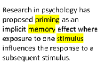

Utilizing the Effects of Priming to Facilitate Text Comprehension

Venue. CHI (2015)
Abstract. Due to the ever-growing amount of textual information we face in our everyday life, the skill of scanning and absorbing the essence of a piece of text is crucial. We cannot afford to read every text in detail, hence we need to acquire strategies to quickly decide on the importance of a text and how to grasp its content. Additionally, the sheer amount of daily reading makes it hard to remember the gist of every text encountered. Research in psychology has proposed priming as an implicit memory effect where exposure to one stimulus influences the response to a subsequent stimulus. Hence, exposure to contextual information can influence comprehension and recall. In our work we investigate the feasibility of using such an effect to visually present text summaries that are quick to understand and deliver the essence of a text in order to help readers not only make informed decisions about whether to read the text or not, but also to build out more cognitive associations that help to remember the content of the text afterward. In two focus groups we discussed our approach by providing four different visualizations representing the gist and important details of the text. In this paper we introduce the visualizations as well as results of the focus groups.
Link to this page: